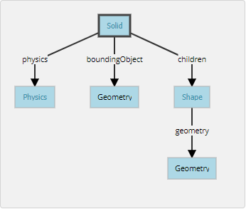

Week10-14 <<
Previous Next >> NOTE
Week15-18
WeeK15
查驗任務影片
Week16
小考影片:
Week17
翻譯Building a clean model tutorial
At this stage we can start to divide the robot into separate links (remember, we
currently have only a single shape for the whole robot). You can do this in two different ways:
在這一階段，我們可以開始將機器人劃分為單獨的鏈接（請記住，
目前整個機器人只有一個形狀）。 您可以通過兩種不同的方式執行此操作：
- Automatic mesh division:this function, which was already described in previous section, will inspect the shape and generate a new shape for all elements that are not linked together via a common edge. This does not always work, but is always worth a try. The function can be accessed with [Menu bar --> Edit --> Grouping/merging --> Divide selected shapes].
- 自動網格劃分：上一小節已經描述了此功能，它將檢查形狀並為未通過公共邊鏈接在一起的所有元素生成新形狀。 這並不總是有效，但總是值得嘗試的。 可以通過[菜單欄->編輯->分組/合併->分割所選形狀]訪問該功能。
- Manual mesh division:via the the triangle edit mode, you can manually select the triangles than logically belong together, then click Extract shape. This will generate a new shape in the scene. Delete the selected triangles after that operation.
- 手動網格劃分：通過三角形編輯模式，您可以手動選擇邏輯上不屬於邏輯的三角形，然後單擊“提取形狀”。 這將在場景中生成新形狀。 完成該操作後，刪除選定的三角形。
In the case of our mesh, method 1 worked fine:
對於我們的網格，方法1可以正常工作：

[Divided mesh]
Now, we could further refine/simplify individual shapes. Sometimes also, a shape might look better if its convex hull is used instead. Othertimes, you will have to use several of above's described techniques iteratively, in order to obtain the desired result. Take for instance following mesh:
現在，我們可以進一步細化/簡化單個形狀。 有時，如果改用凸包，形狀可能會看起來更好。 有時，您將不得不反複使用上述幾種技術，以獲得所需的結果。 以以下網格為例：

[Imported mesh]
The problem with above's shape is that we cannot simplify it nicely, because of the holes it contains. So we have to go the more complicated way via the shape edit mode, where we can extract individual elements that logically belong to the same convex sub-entity. This process can take several iterations: we first extract 3 approximate convex elements. For now, we ignore the triangles that are part of the two holes. While editing a shape in the shape edit mode, it can be convenient to switch the visibility layers, in order to see what is covered by other scene items.
上面形狀的問題是，由於其中包含孔，我們無法很好地簡化它。 因此，我們必須通過形狀編輯模式進行更複雜的處理，在該模式下，我們可以提取邏輯上屬於同一凸形子實體的單個元素。 此過程可能需要進行多次迭代：我們首先提取3個近似凸元素。 現在，我們忽略作為兩個孔的一部分的三角形。 在形狀編輯模式下編輯形狀時，可以方便地切換可見性圖層，以查看其他場景項所覆蓋的內容。

[Step 1]
We end up with a toal of three shapes, but two of them will need further improvement. Now we can erase the triangles that are part of the holes. Finally, we extract the convex hull individually for the 3 shapes, then merge them back together with [Menu bar --> Edit --> Grouping/Merging --> merge selected shapes]:
我們最終得到三個形狀的總和，但是其中兩個將需要進一步改進。 現在我們可以擦除作為孔的一部分的三角形。 最後，我們分別提取3種形狀的凸包，然後將其與[菜單欄->編輯->分組/合併->合併所選形狀]合併在一起：
[Step 2]
In CoppeliaSim, we can enable/disable edge display for each shape. We can also specify an angle that will be taken into account for the edge display. A similar parameter is the shading angle, that dictates how facetted the shape will display. Those parameters, and a few others such as the shape color, can be adjusted in the shape properties. Remember that shapes come in various flavours. In this tutorial we have only dealt with simple shapes up to now: a simple shape has a single set of visual attributes (i.e. one color, one shading angle, etc.). If you merge two shapes, then the result will be a simple shape. You can also group shapes, in which case, each shape will retain its visual attributes.
In next step, we can merge elements that logically belong together (if they are part of the same rigid element, and if they have the same visual attributes). Then we change the visual attributes of the various elements. The easiest ist to adjust a few shapes that have different colors and visual attributes, and if we name the color with a specific string, we can later easily programmatically change that color, also if the shape is part of a compound shape. Then, we select all the shapes that have the same visual attributes, then control-select the shape that was already adjusted, then click Apply to selection, once for the Colors, once for the other properties, in the shape properties: this transfers all visual attributes to the selected shapes (including the color name if you provided one).
在CoppeliaSim中，我們可以啟用/禁用每種形狀的邊緣顯示。我們還可以指定邊緣顯示時要考慮的角度。相似的參數是陰影角，它指示形狀將在多方面顯示。這些參數以及其他一些參數（例如形狀顏色）可以在形狀屬性中進行調整。請記住，形狀有多種風味。到目前為止，在本教程中，我們僅處理簡單的形狀：簡單的形狀具有一組視覺屬性（即一種顏色，一個陰影角度等）。如果合併兩個形狀，則結果將是一個簡單的形狀。您還可以對形狀進行分組，在這種情況下，每個形狀將保留其視覺屬性。
在下一步中，我們可以合併邏輯上屬於一起的元素（如果它們屬於同一剛性元素，並且具有相同的視覺屬性）。然後，我們更改各種元素的視覺屬性。調整具有不同顏色和視覺屬性的幾種形狀的最簡便方法，如果我們使用特定的字符串來命名顏色，則以後可以輕鬆地以編程方式更改該顏色，即使該形狀是複合形狀的一部分。然後，我們選擇所有具有相同視覺屬性的形狀，然後控制選擇已調整的形狀，然後單擊“應用於選擇”，一次是“顏色”，一次是其他屬性，在形狀屬性中：這將轉移所有所選形狀的視覺屬性（如果提供的話，還包括顏色名稱）。
翻譯Webots User Guide
A Solid node represents a rigid body, that is a body in which deformation can be neglected. The distance between any two given points of a rigid body remains constant in time regardless of external forces exerted on it. For example a table, a robot finger phalanx or a wheel are rigid bodies. Soft bodies and articulated objects are not rigid bodies. For example, a rope, a tire, a sponge or an articulated robot arm are not rigid bodies. However, an articulated entity can be broken into several rigid bodies.
The physics engine of Webots is designed for simulating rigid bodies only. An important step, when designing a simulation, is to break up the various entities into separate rigid bodies.
To define a rigid body, you will have to create a Solid node. Inside this node you will set up different sub-nodes corresponding to the characteristics of the rigid body. The following figure depicts a rigid body and its sub-nodes. The graphical representation of the Solid node is defined by the Shape nodes populating its children list. The collision bounds are defined in its boundingObject field. The graphical representation and the collision shape are often but not necessarily identical. Finally, the physics field defines if the object belongs to the dynamical or to the static environment. All these sub-nodes are optional, but the physics field needs the boundingObject to be defined.

The simplest model of a rigid body in Webots having a graphical representation, a physical bounding object and being in the dynamical environment.
The Geometry box (in this figure) stands for any kind of geometrical primitive. In fact, it can be substituted by a Sphere, a Box, a Cylinder, etc.
實體節點表示剛體，即可以忽略變形的剛體。剛體上任意兩個給定點之間的距離在時間上保持恆定，而不管施加在其上的外力如何。例如，桌子，機械手指骨或輪子是剛體。軟體和關節物體不是剛體。例如，繩索，輪胎，海綿或關節式機械臂不是剛性體。但是，可以將一個鉸接的實體分解為幾個剛體。
Webots的物理引擎僅設計用於模擬剛體。設計仿真時，重要的一步是將各個實體分解為單獨的剛體。
要定義剛體，您將必須創建一個實體節點。在此節點內，您將根據剛體的特性設置不同的子節點。下圖描繪了剛體及其子節點。實體節點的圖形表示由填充其子級列表的Shape節點定義。碰撞範圍在其boundingObject字段中定義。圖形表示和碰撞形狀通常但不一定相同。最後，物理字段定義對像是屬於動態環境還是屬於靜態環境。所有這些子節點都是可選的，但物理場需要定義boundingObject。
Webots中剛體的最簡單模型，具有圖形表示，物理邊界對象並且處於動態環境中。
幾何框（在此圖中）代表任何類型的幾何圖元。 實際上，它可以用球體，盒子，圓柱體等代替。
Week10-14 <<
Previous Next >> NOTE